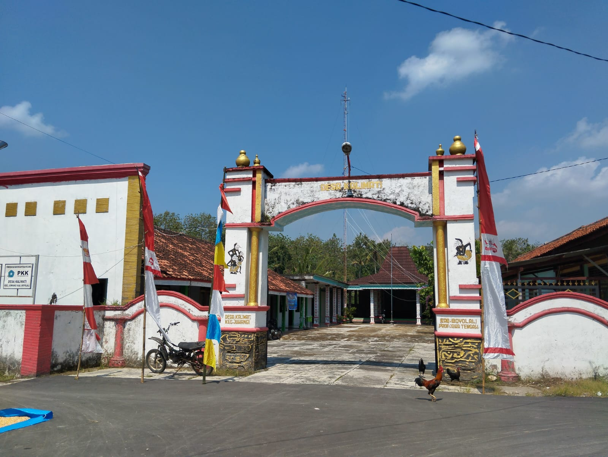
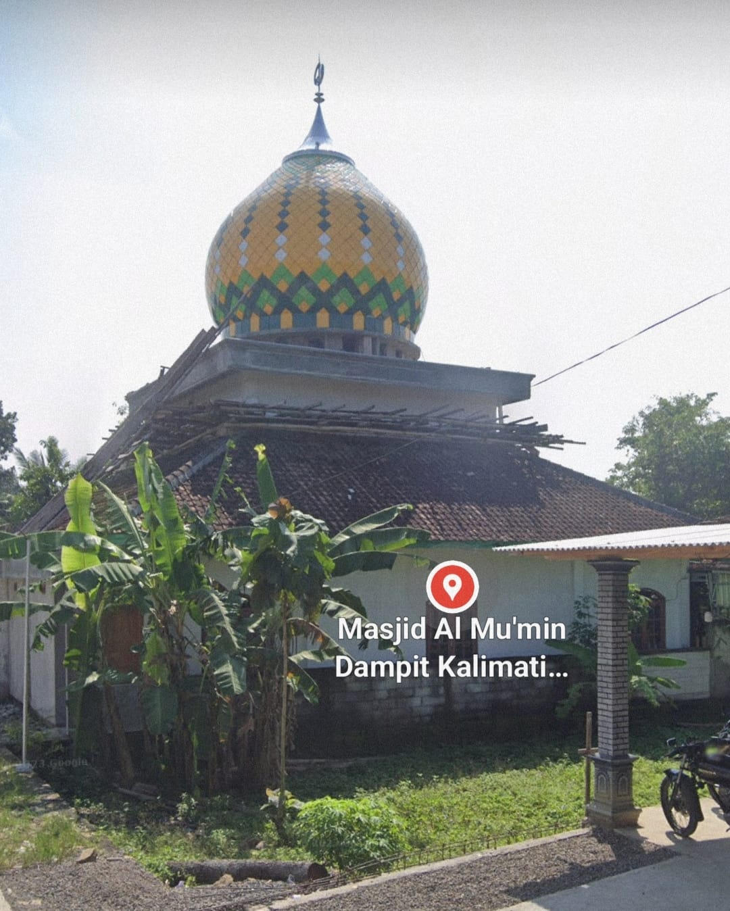
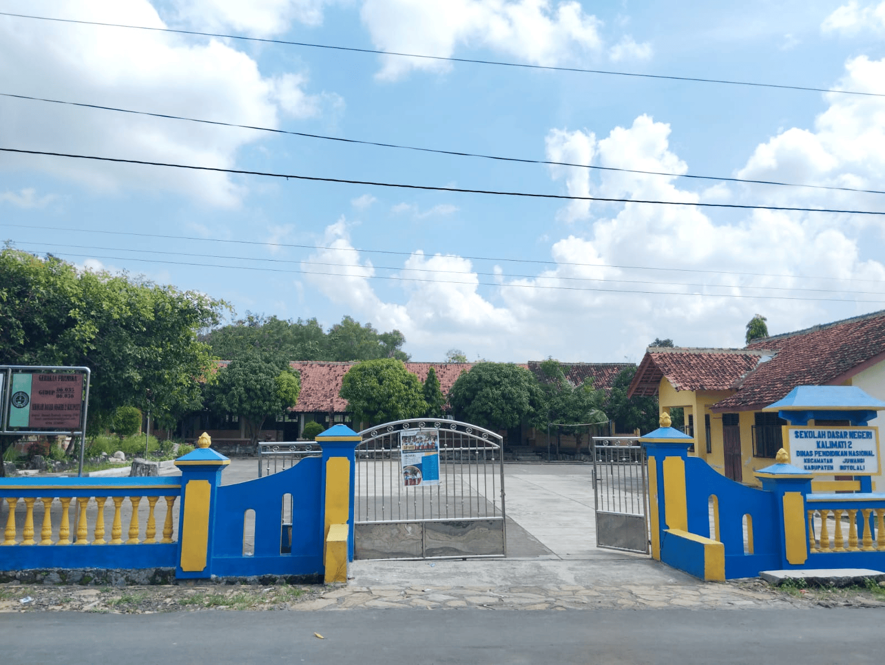
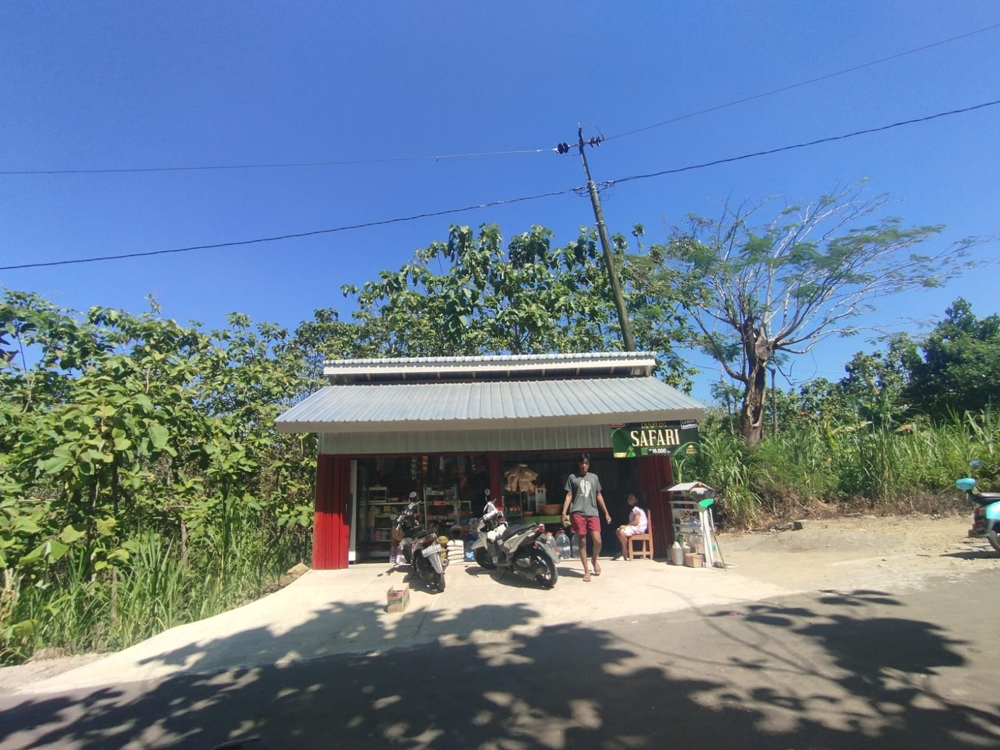

Tentang Desa Kalimati

Selamat datang di website resmi Desa Kalimati, Kecamatan Juwangi, Kabupaten Boyolali.
Desa Kalimati merupakan salah satu desa yang terletak di ujung utara Kabupaten Boyolali, Provinsi Jawa Tengah. Desa ini dikenal dengan suasana pedesaan yang asri, masyarakat yang ramah, serta kekayaan potensi alam dan budaya yang masih terjaga hingga kini.
Desa Kalimati terdiri dari empat dusun, yaitu:
- Dusun Dampit, yang terkenal dengan kekompakan warganya serta semangat gotong royong yang tinggi.
- Dusun Kalimati, sebagai pusat pemerintahan desa, yang menjadi sentra kegiatan masyarakat baik administratif maupun sosial.
- Dusun Brojo, memiliki lanskap alam yang menarik dan potensi pertanian yang cukup besar.
- Dusun Kedung Randu, dikenal dengan sumber daya aidan lingkungan hijau yang masih alami.
Dengan semangat membangun desa yang berkelanjutan, kami berkomitmen untuk terus meningkatkan pelayanan kepada masyarakat serta menggali dan mengembangkan potensi lokal yang ada demi kemajuan bersama. Website ini hadir sebagai sarana informasi, transparansi, dan komunikasi antara pemerintah desa dan warga, serta sebagai jendela bagi masyarakat luas untuk mengenal lebih dekat Desa Kalimati.
Mari bersama-sama kita wujudkan Desa Kalimati yang maju, mandiri, dan sejahtera.
Sejarah Desa Kalimati
Asal-usul Nama & Awal Pemukiman
Kalimati berasal dari toponimi “kelami mati” (sungai yang mati), karena desa ini dulunya bekas aliran sungai yang kemudian menyempit dan dialihfungsikan menjadi pemukiman. Warga menemukan pasir saat menggali sumur dalam beberapa meter, bukti bekas sungai purba
Menurut cerita lokal, desa ini dibabad (didirikan) oleh “Eyang Gambret” (Eyang Dirno), konon dari Mataram Islam, bersama 21 saudaranya. Mereka menetap setelah era Majapahit, di wilayah yang sebelumnya bagian dari Kahuripan (pada masa Airlangga)
Transformasi & Struktur Desa
Secara administratif, Desa Kalimati terdiri dari enam dusun: Kedungdondo, Kedungrandu, Kalimati, Dampit, Pondok, dan Brojo
Dahulu banyak rumah bertengger tepat di tepian aliran sungai yang disempitkan, karena letaknya strategis bagi lalu lintas perahu/peragu pedagang
Budaya & Tradisi Lokal
Desa ini dikenal dengan tradisi Rodad, yaitu tarian dan atraksi debus yang dilakukan setiap bulan Jawa Suro untuk memohon keselamatan dan kekebalan. Tradisi ini diiringi musik tradisional dan berasal dari kisah Nabi Muhammad dalam sejarah perang
Tradisi tersebut memiliki fungsi pendidikan religius, dipelopori oleh para ulama untuk memperkuat iman masyarakat dan meminta berkah bagi desa .
Infrastruktur & Tantangan
Warga gotong royong mendirikan jembatan utama di Dukuh Kedungrandu pada 2017, diprakarsai oleh Bhabinkamtibmas Brigadir Dwi Hartanto, dengan dana dan tenaganya sendiri, untuk memudahkan mobilitas saat pemakaman dan kebutuhan sehari-hari
Namun, jembatan beton tersebut sempat beberapa kali putus dan hanyut akibat banjir, terutama pada Desember 2018 dan Januari 2019. Peristiwa tersebut sempat menyebabkan terisolasinya puluhan kepala keluarga di Kedungdondo
Akses jalan menuju desa juga mengalami kerusakan karena tanah labil, dan sudah diperbaiki menggunakan cor beton demi kestabilan sejak 2019
Saat ini, berbagai warisan budaya seperti sedekah bumi terus dilestarikan sebagai identitas desa.

Lokasi Desa Kalimati
Desa Kalimati berada di Kecamatan Juwangi, Kabupaten Boyolali, Provinsi Jawa Tengah.
Desa ini mudah diakses melalui jalur darat dari pusat kota Boyolali dan sekitarnya.
Desa Kalimati berada di SELATAN Desa Ngaren.
Desa Kalimati berada di UTARA Desa Sambeng.
Desa ini mudah diakses melalui jalur darat dari pusat kota Boyolali dan sekitarnya.
Koordinat geografis desa berada pada titik yang strategis dengan akses ke berbagai fasilitas pemerintahan dan layanan publik.
Fasilitas Desa
Desa Kalimati dilengkapi dengan berbagai fasilitas umum yang menunjang kebutuhan masyarakat seperti:
- Balai desa sebagai pusat administrasi dan pelayanan masyarakat
- Tempat ibadah seperti masjid

- Fasilitas Pendidikan Sekolah Dasar

- Warung UMKM Warga

- Lapangan Voli